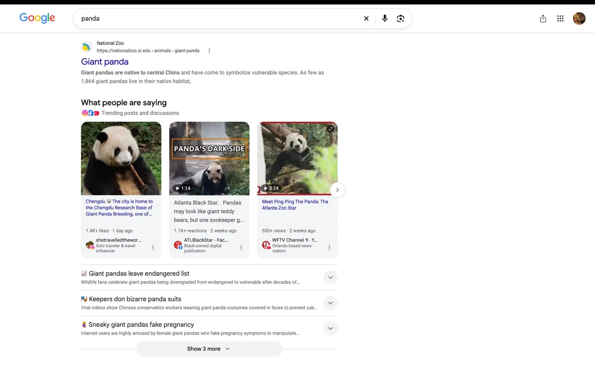
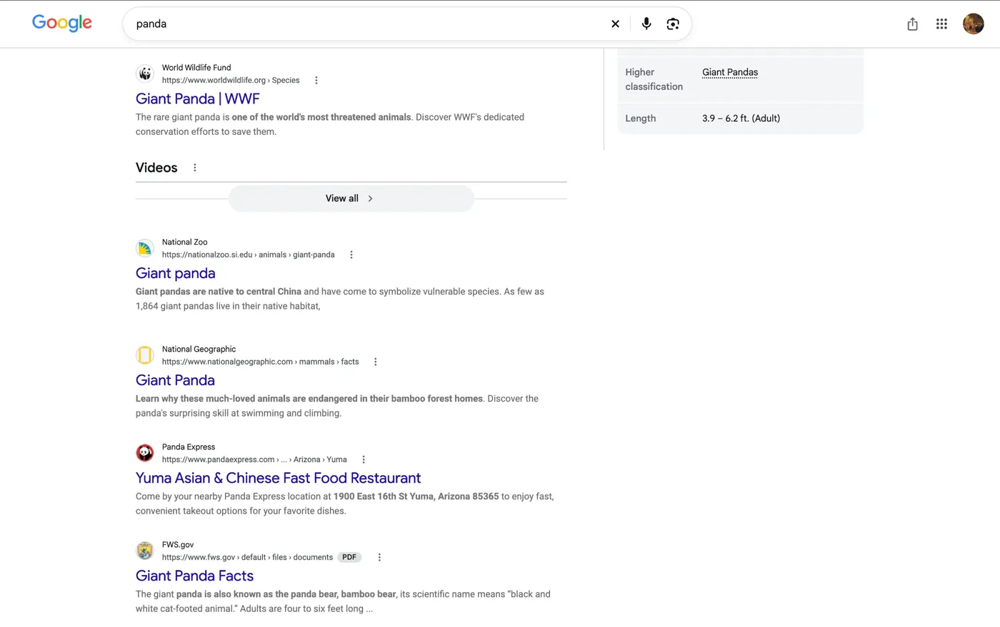
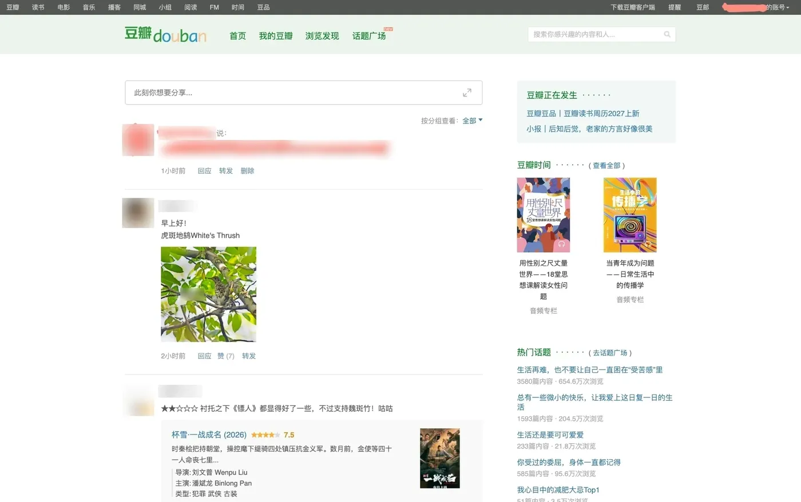
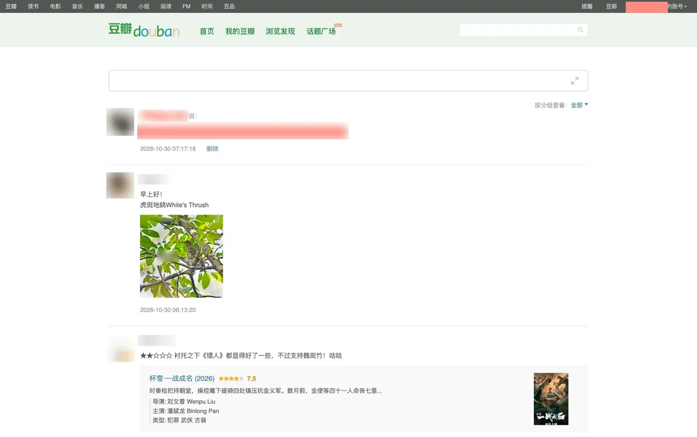
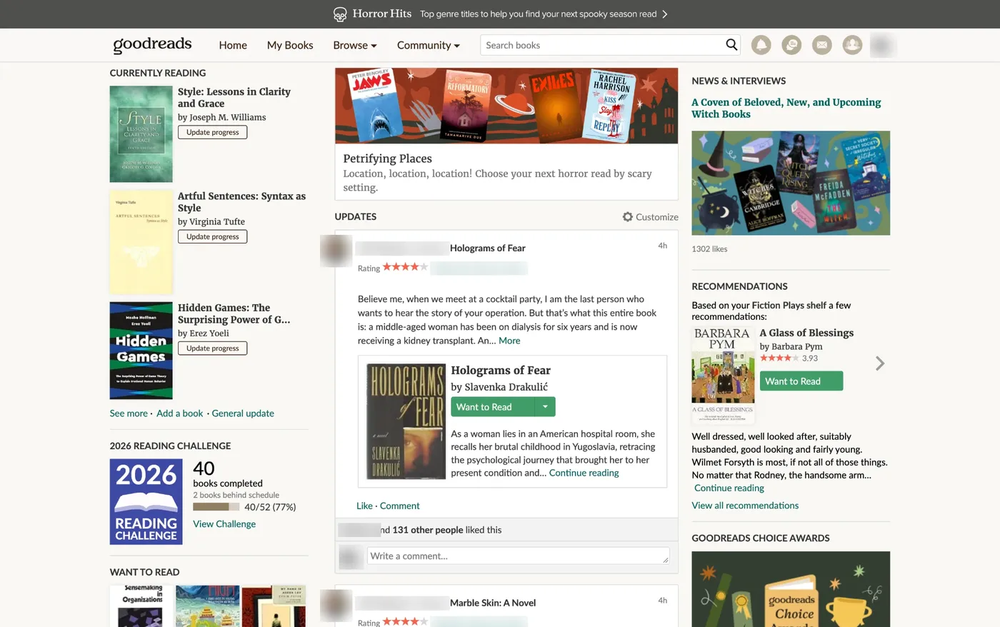
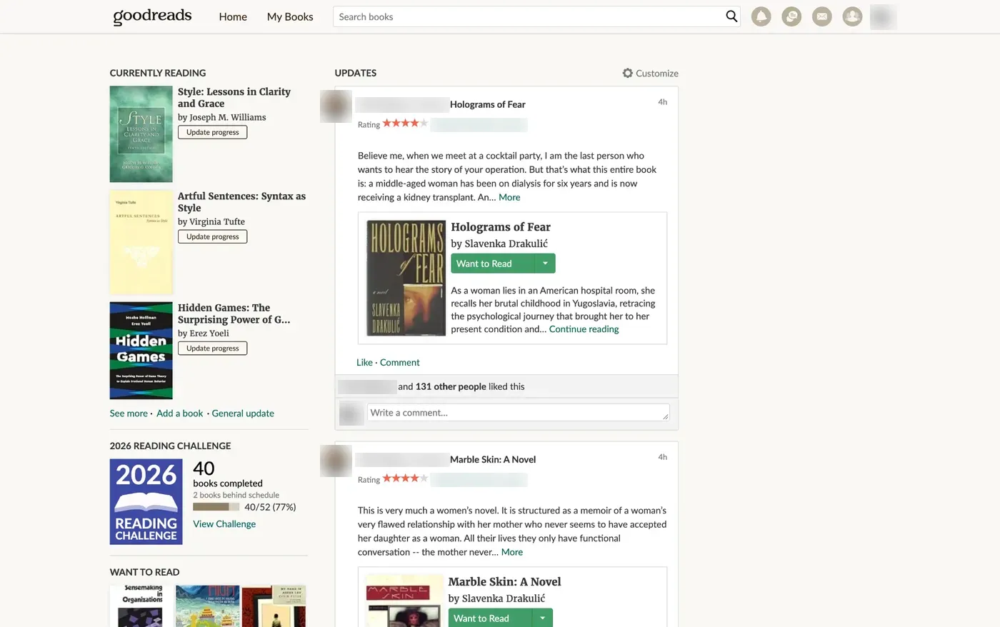
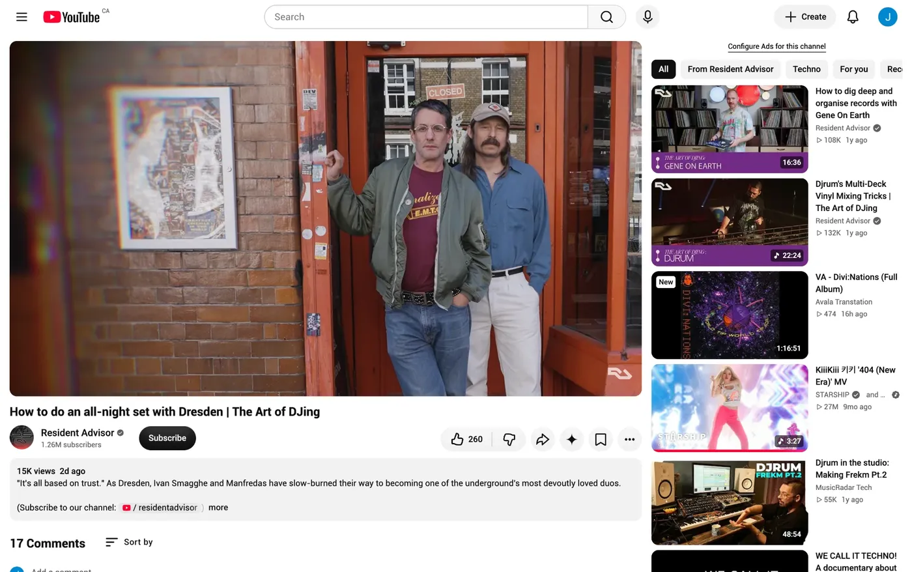
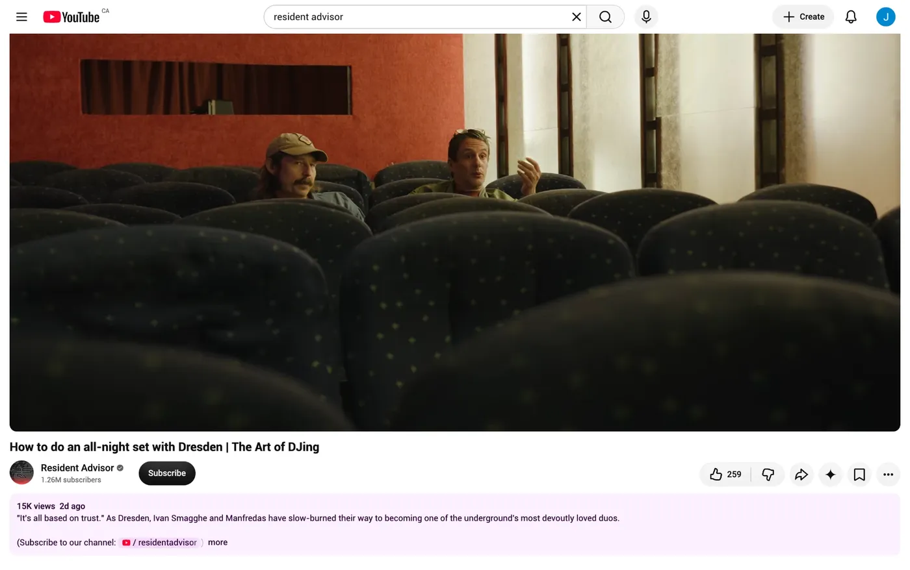
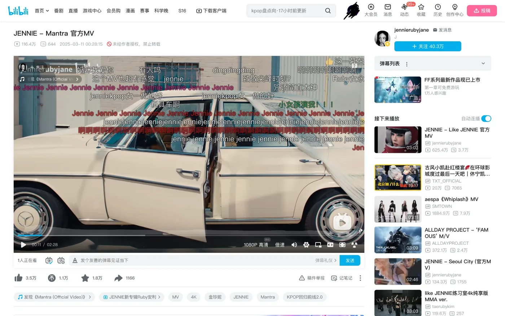
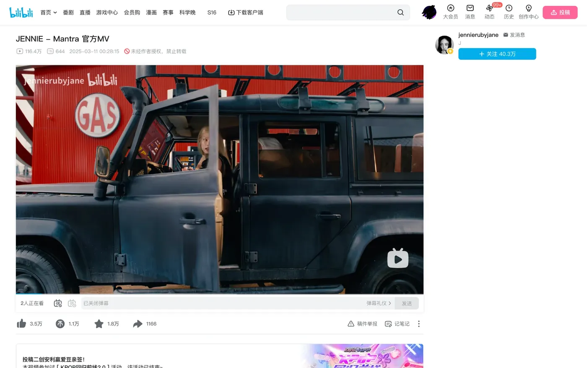

Attention Filter
A Chrome extension that takes things away.
Attention Filter hides the behavioral nudges websites use to keep me there longer than I meant to stay: the like counts, the autoplay, the never-ending scroll. What's left is the thing I came for.

Google Search · before
Google Search · after'">Google Search. Short videos, TikTok cards, “What people are saying”. Search results go back to being links.
Why I built it
I love reading. At thirteen, the night before the exam that decides which high school you get into (a big deal in China), I skipped prepping and went to a bookstore for Nietzsche instead. Books always left me feeling nourished. Somewhere between Facebook and WeChat, that feeling thinned out. In its place came anxiety, envy, and a constant sense that something was left undone. The classics hadn't changed. The way they reached me had.
One night I was watching Tarkovsky's The Steamroller and the Violin on YouTube. Down the right side ran a column of recommended videos; in the corner, an autoplay switch, waiting. I went fullscreen, but it was too late. They were already in my head, running in the background like unfinished business. So I opened Chrome's Inspect panel and deleted them, one by one. It felt like a toothpick beating a tank. For the rest of the film, the world was quiet, and I was only watching.
This extension is that night, made permanent.
It's part of a longer habit. I've never used TikTok, and I never will. I choose text over audio, and audio over video, every time: with text, I set the pace. And unless work demands it, I won't touch 小红书 (Xiaohongshu, or RedNote). To me, it is a thief of lives.
What it hides
Almost everything it removes falls into one of four kinds: feeds that choose what you see next, social signals that tell you what other people think before you've thought it yourself, pull-ins that nudge you one click further, and ads.
Show as a table
Each bar counts the rules for one site, sorted into a kind by hand.

Douban · before
Douban · after'">Douban. My favorite Chinese social network. I've discovered so many books, movies, and music through it. Gone: 豆瓣正在发生 (“Happening on Douban”), 热门话题 (“trending topics”), the 赞 / 转发 / 回应 (like / reshare / reply) counts, and follower numbers. 1小时前 (“an hour ago”) becomes an exact time. Relative time is a subtle nudge: it makes every post feel fresh, and quietly tells you that you’re falling behind if you don’t check now. An exact time just says when.

Goodreads · before
Goodreads · after'">Goodreads. Community reviews, “Readers also enjoyed”, the whole right sidebar, and the Load More button, so the home feed ends after one page.

YouTube · before
YouTube · after'">YouTube. The recommendation sidebar, the grid of videos that appears when one ends, and the comments, which rarely add much to the video itself.

Bilibili · before
Bilibili · after'">Bilibili. Often called the Chinese YouTube. Gone: its recommended feed, the sidebar, comments, the 弹幕 (danmaku, comments that scroll across the video) list, and autoplay.
Small choices, big intent
Principles
- No tracking. It doesn't record what I see or hide. There's nothing to analyze.
- No network requests. Every rule is in the extension itself. It works offline and talks to no one.
- No dependencies. Plain JavaScript and CSS. No build step, nothing to update but the rules.
- Nothing to manage. No dashboard, no streaks, no counters. A tool against distraction shouldn't become one.
I've given up on FOMO. If I have to swallow 100 grams of sand to get 10 grams of rice, I don't care how good the rice is. There's always another restaurant. The same goes for every feed, every trending list, every “you might also like”. Missing something good is the price of not drowning in everything else, and I'm glad to pay it.
How it works
Each site has a list of CSS selectors. Before the page draws anything (document_start), the extension adds a <style> tag that hides them, so the distractions never flash on screen. Many of these sites load content as you go, so a MutationObserver keeps watching for new elements.
That's the whole thing. Back to the map.